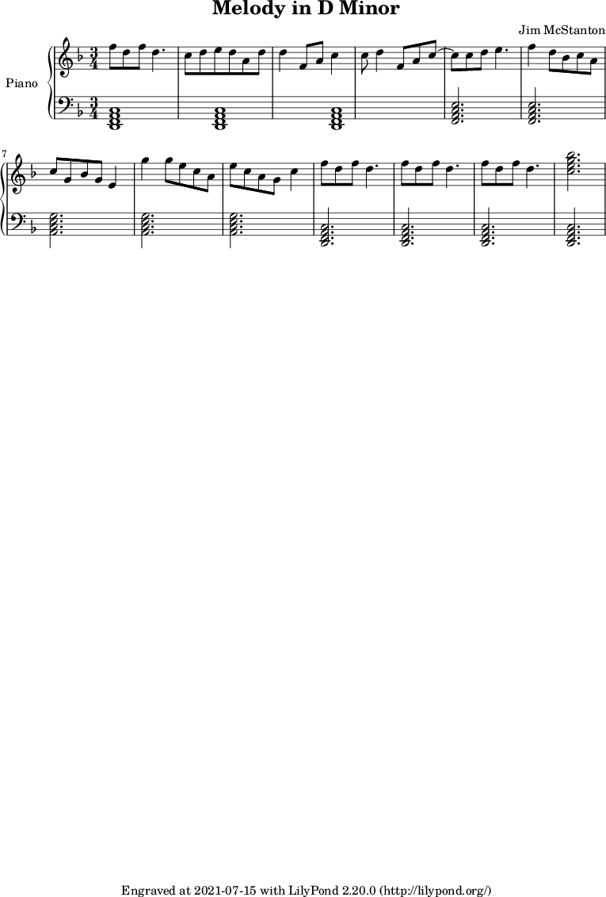

A little piece in D minor. Not in love with this one, it seems a little too upbeat for the mode. Funny thing about it though: I tried reharmonizing in F major and it sounded worse to me, so here it stays in the original sibling key. That’s what these daily exercises are for though after all, trying new things and getting an ear for different sounds and modes.
